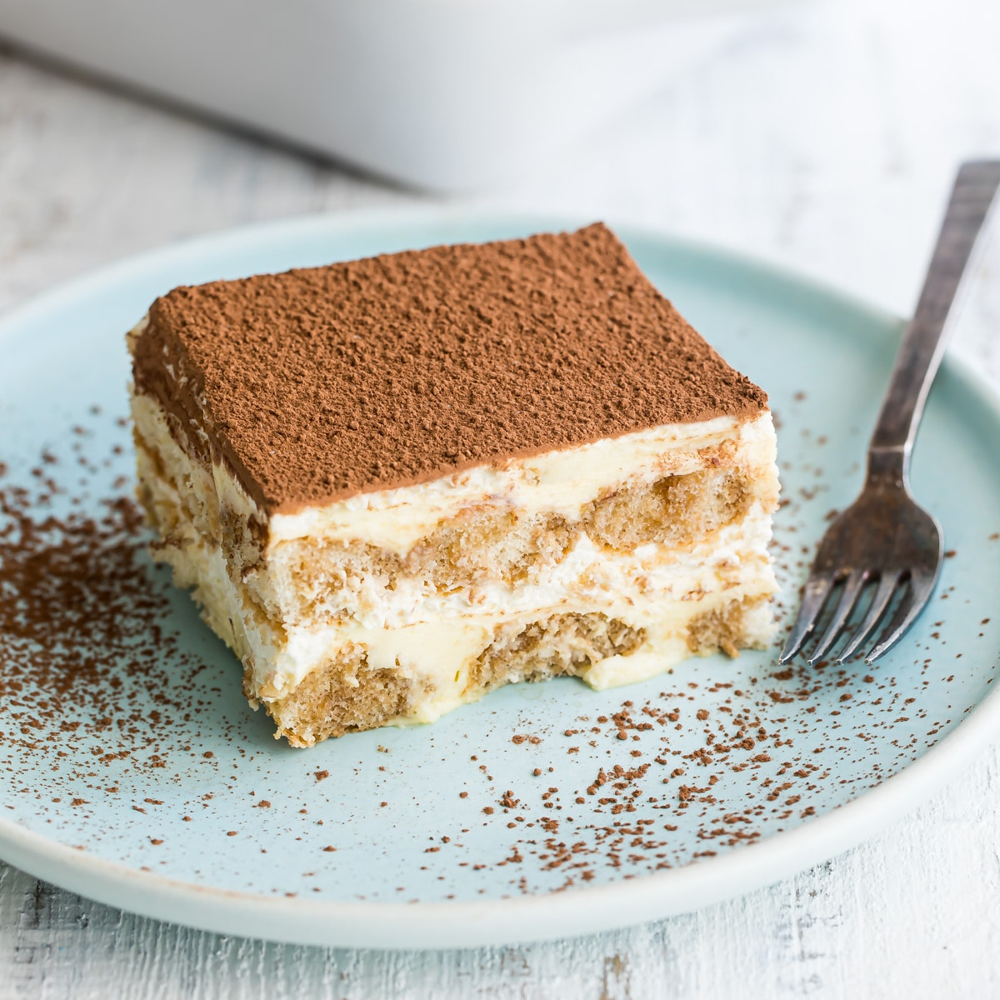

Tiramisu

Description
A creamy dessert of espresso-soaked ladyfingers surrounded by lightly sweetened whipped cream and a rich mascarpone, tiramisù relies heavily on the quality of its ingredients. If you don’t have a barista setup at home, pick up the espresso at a local coffee shop, or use strongly brewed coffee. As for the ladyfingers, make your own or buy them, but keep in mind that store-bought varieties can range from soft and spongy (like angel food cake) to hard and crunchy (like biscotti). Both kinds will work here, but if you're using the softer variety, stick to a light brushing of espresso, instead of a deep dip.
Steps to make Tiramisu
- Quickly dip half of the ladyfingers in coffee syrup and arrange in a 9×13 casserole
- Combine 6 yolks and 3/4 cup sugar and continue whisking over a saucepan of simmering water for 9-10 minutes. Remove from steam and whisk for a few minutes to help it cool cool.
- Beat 16 oz mascarpone with 3 Tbsp rum then beat in the cooled yolk mixture until blended.
- Whip 2 cups cold heavy cream to stiff peaks. With a spatula, fold half into the mascarpone mixture then fold in the remaining half until blended.
- Spread half of the cream over the first layer of ladyfingers. Dip the remaining ladyfingers and arrange over the cream. Spread on remaining cream. Cover and refrigerate overnight then dust with cocoa powder and serve.